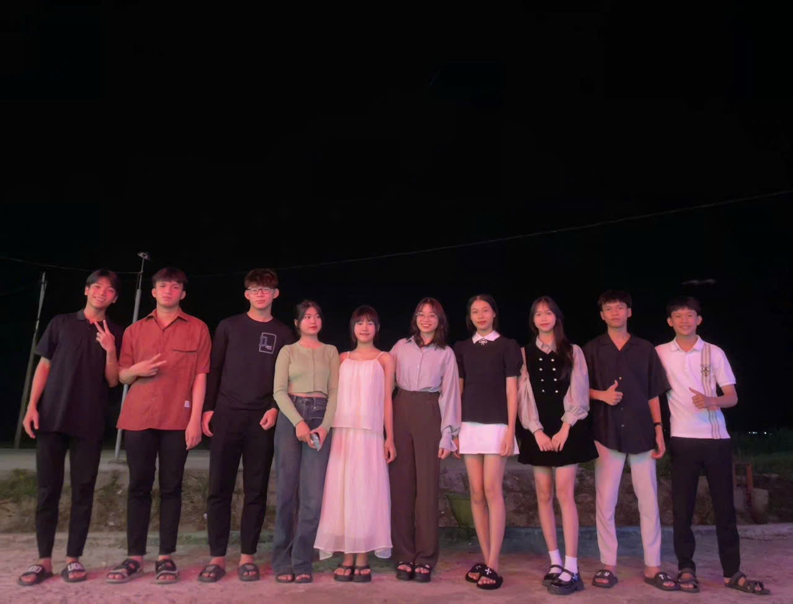

Trong suốt những năm tháng cấp 3, có một người bạn đã để lại trong tôi nhiều ấn tượng sâu sắc. Đó là một người mà tôi có thể dễ dàng nhận ra giữa đám đông nhờ dáng vẻ quen thuộc và những thói quen rất riêng. Ngoại hình của bạn ấy không có gì quá nổi bật, không quá cao cũng không quá thấp, không quá gầy cũng không quá đầy đặn, nhưng chính nét giản dị ấy lại khiến bạn trở nên gần gũi và thân quen hơn bao giờ hết. Mái tóc lúc nào cũng có chút rối nhẹ vì chẳng mấy khi để tâm đến chuyện chải chuốt, nhưng điều đó chẳng ảnh hưởng gì đến vẻ tự nhiên vốn có. Đôi mắt sáng, luôn ánh lên vẻ tinh nghịch nhưng cũng rất chân thành, là thứ mà ai tiếp xúc cũng có thể nhận ra ngay lập tức. Khi cười, khóe môi hơi nhếch lên một bên, tạo thành một nét duyên ngầm mà dù chẳng phải hot boy hay hot girl gì, bạn vẫn có sức hút rất riêng.
Nhưng điều làm tôi nhớ nhất về người bạn này không phải là vẻ ngoài, mà chính là tính cách. Bạn ấy có một sự lạc quan kỳ lạ, lúc nào cũng vui vẻ, thậm chí trong những tình huống khó khăn nhất vẫn có thể tìm ra điều gì đó để cười. Khi cả lớp căng thẳng vì kỳ thi, bạn là người đầu tiên bày trò để giảm bớt áp lực. Khi ai đó trong nhóm buồn bã, bạn luôn có cách khiến mọi người bật cười dù chỉ là một câu nói vu vơ hay một hành động ngốc nghếch nào đó. Dù vậy, không phải lúc nào bạn cũng chỉ biết đùa giỡn. Có những khoảnh khắc, bạn lại là người sâu sắc đến bất ngờ. Những lúc ngồi nói chuyện nghiêm túc, bạn có thể đưa ra những lời khuyên khiến tôi phải suy nghĩ. Có lần tôi buồn vì điểm số không như mong muốn, bạn chỉ nhẹ nhàng nói: "Thi rớt thì thi lại, còn trẻ mà, đừng có làm như cuộc đời đến đây là hết." Câu nói tưởng chừng đơn giản nhưng lại khiến tôi cảm thấy nhẹ lòng hơn rất nhiều.
Nhắc đến bạn, tôi không thể quên những kỷ niệm cùng nhau trải qua. Những buổi trưa học xong, cả nhóm kéo nhau ra quán trà sữa quen thuộc, gọi mỗi đứa một ly rồi ngồi tám chuyện cả buổi trời. Có khi chỉ là những chuyện vặt vãnh như hôm nay thầy cô có gì vui, hôm qua làm bài tập có bị bí chỗ nào không, nhưng những khoảnh khắc ấy lại trở thành ký ức khó quên. Rồi những lần đi dã ngoại của lớp, bạn luôn là người khuấy động không khí, bày ra đủ trò nghịch ngợm để ai cũng phải bật cười. Tôi nhớ lần cả lớp cùng nhau tổ chức sinh nhật bất ngờ cho một người bạn, chính bạn là người đã lén lút chuẩn bị bánh kem và đèn trang trí, rồi còn cố tình kéo người đó đi chỗ khác để mọi người có thời gian sắp xếp. Khi mọi thứ xong xuôi, bạn lại là người đầu tiên bật nắp chai nước suối, giả vờ làm rơi lên đầu nhân vật chính, khiến tất cả phá lên cười.
Đúng là 11 đứa đinn nặng. (Hết cíuuuu!!!!!)...........
1. ấn zoo ảnh để xem tiếp------>>>>
